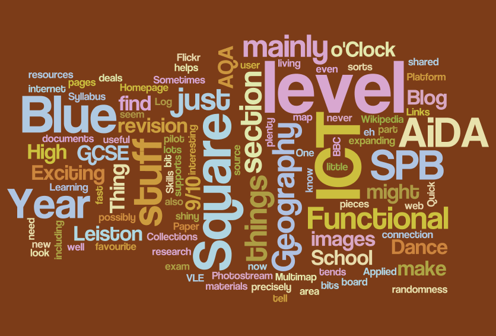
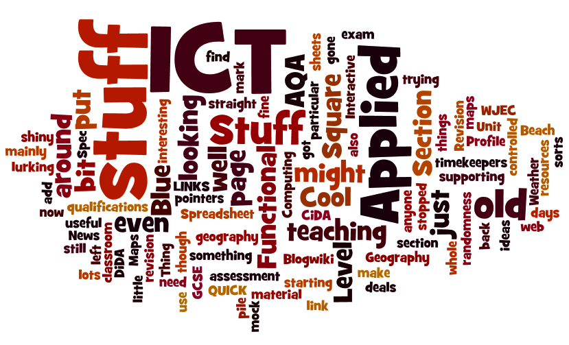

About That Blue Square Thing...
What is blue and square anyway?
How do you know That Blue Square Thing is worth reading?
Experience, that's how. Years and years of teaching experience. That includes thousands of coursework pieces and exam entries and marking (and setting!) real exams for one of the big exam boards. In other words, That Blue Square Thing knows what it's talking about.
This site has been up on the web since 2001 in various forms. It started back in the days of dial up internet connections with black text on a white background and no images. We've come a long way since then!
Bits of the site might get out of date every now and again, but most things should still be pretty usable. In particular you should note that I no longer teach A Level ICT and that the GCSE Geography revision stuff is really getting quite old now!
That Blue Square Thing gets Wordled:
I wordledExternal link the home page on April 16th 2009 and this is what I got. Maybe this tells you as much as anything what this site is all about!
I wordled it again on October 8th 2014 and this is what I got. Clearly there's more applied ICT stuff these days!
Some things to bear in mind:
This site is not part of any school or other institution. It's mine, made in my own time with hosting I arrange and pay for. The work remains my own.
All of the links from this site were checked when the page was created and reviewed regularly. The content should be suitable for High School students aged between 11 and 18. Should the linked site have changed, however, I can not be held responsible for what you might find there. The web is a marvelous but large and sometimes dangerous place.
Please let me know if links lead anywhere other than where they should.